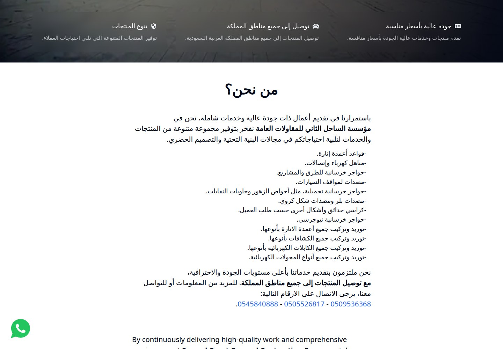
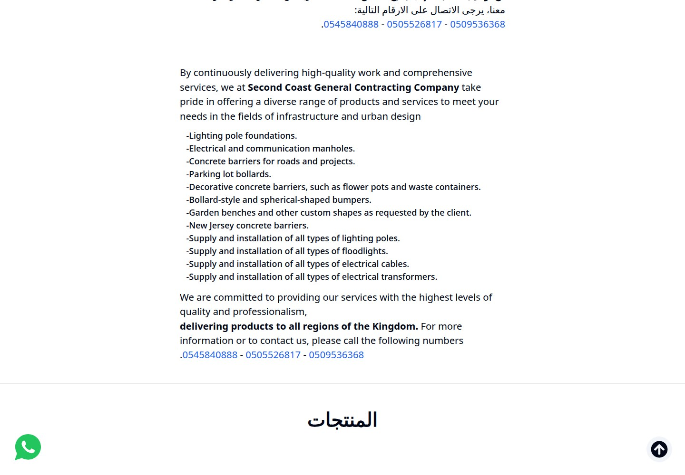
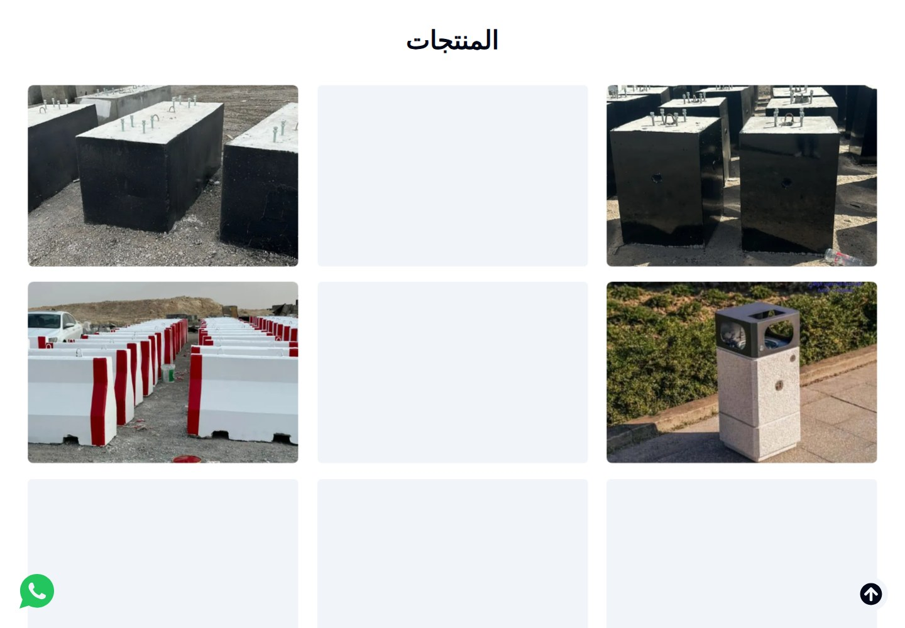
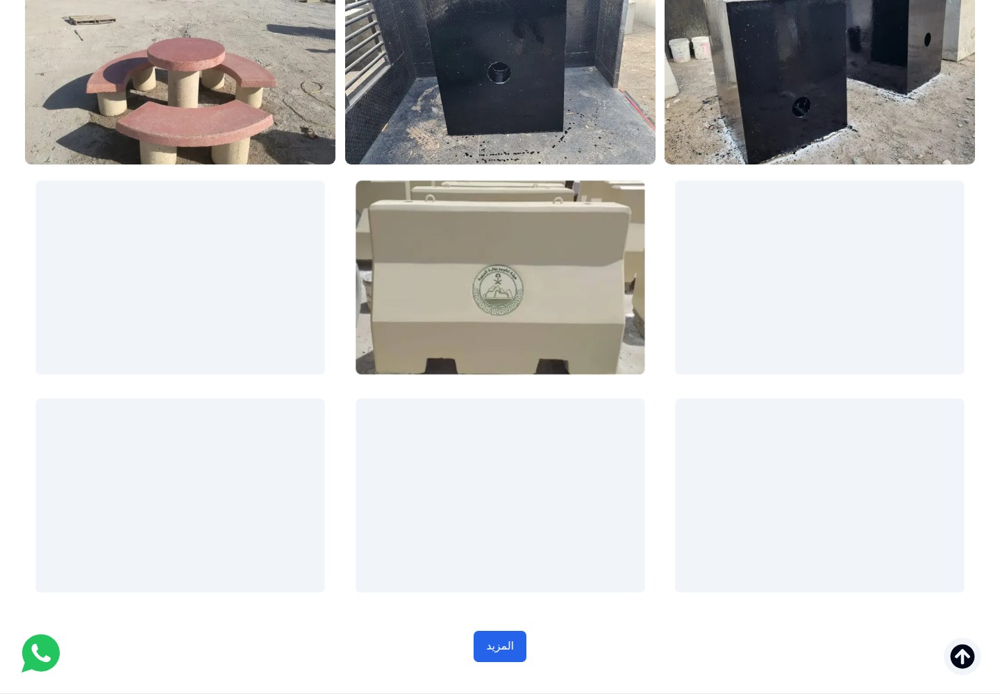
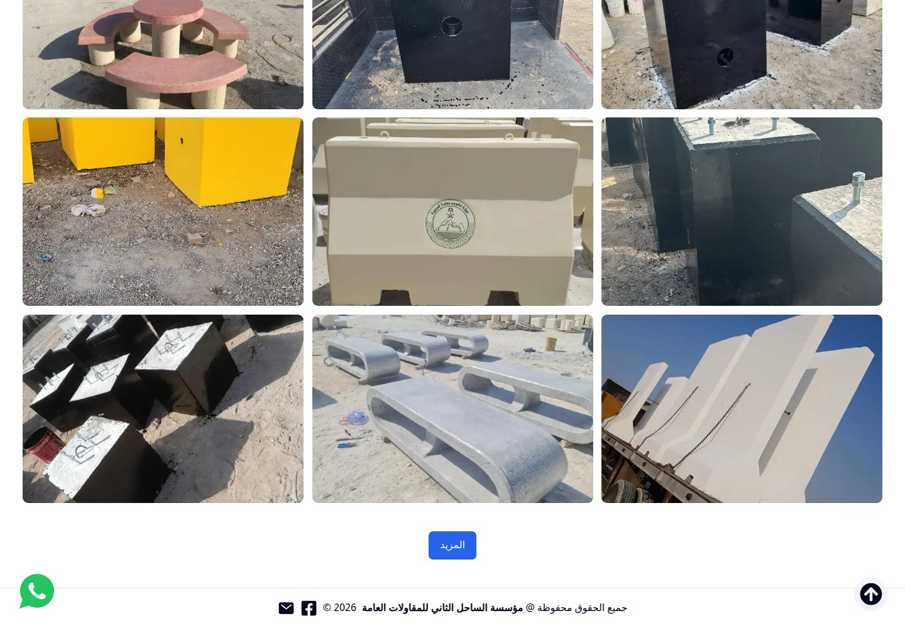
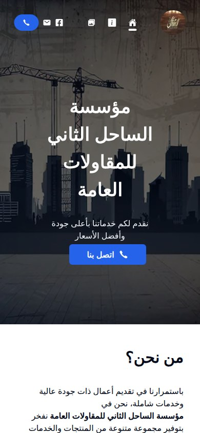
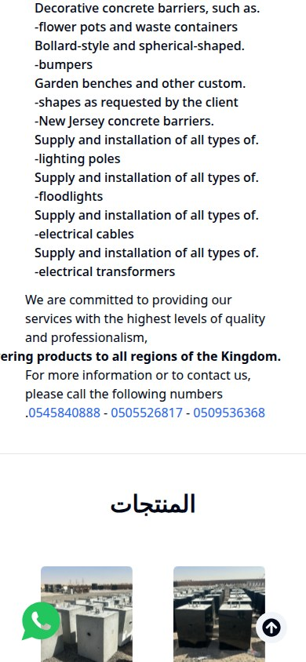
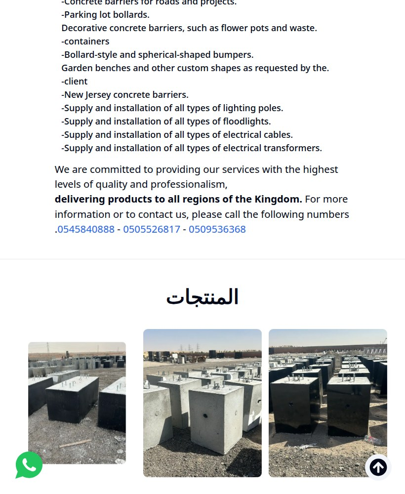
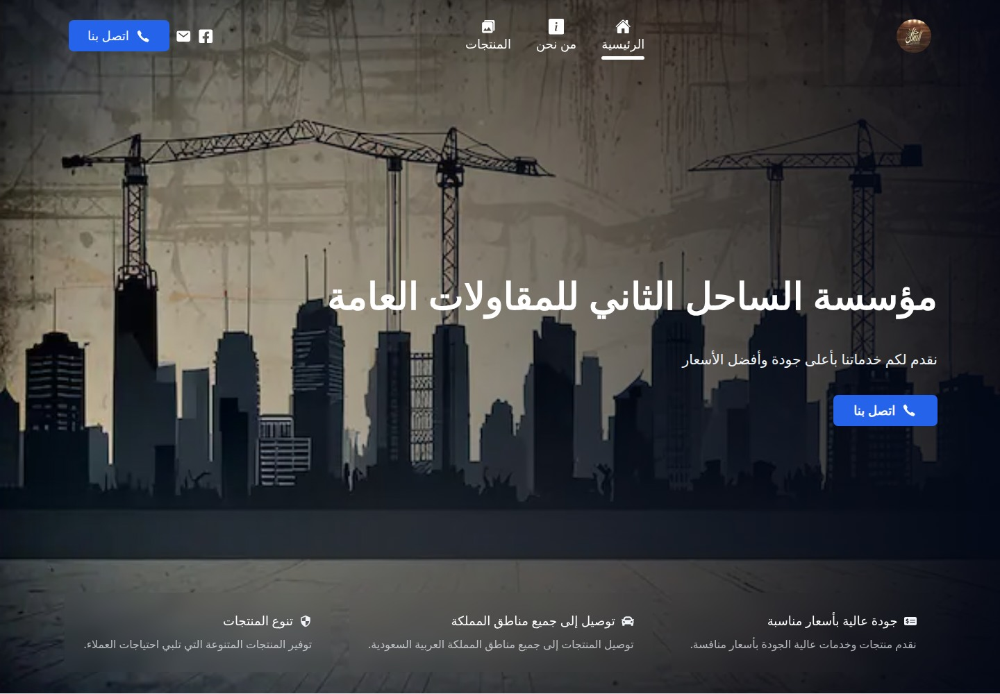
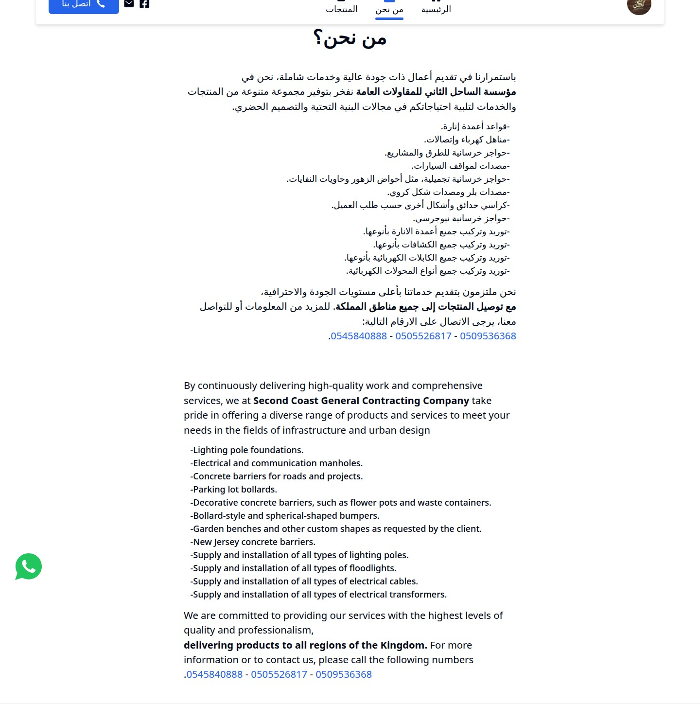

Second Coast Contracting
Building the essentials of urban infrastructure.

WHAT IT IS
General contracting, infrastructure products, and supply-and-installation services
The homepage describes a general contracting company offering concrete urban/infrastructure products and electrical and lighting supply-and-installation services, with delivery to regions across Saudi Arabia. This is based on the site's own copy, not independently verified service delivery.
This case study documents what the linked website presents. Individual contribution to this project has not been confirmed.
WHAT THE WEBSITE OFFERS
- Homepage hero names the company and includes a contact-by-phone call to action.
- Three benefit statements promote quality at competitive prices, delivery throughout Saudi Arabia, and product variety.
- About copy lists lighting-pole foundations, electrical/communications manholes, road barriers, parking bollards, decorative concrete items, garden benches/custom shapes, and New Jersey barriers.
- The site states it supplies and installs lighting poles, floodlights, electrical cables, and transformers.
- A product-gallery section displays product photographs; the initial page shows 15 images, and activating “Arabic text” reveals additional images.
- Gallery photographs visibly include concrete precast forms/barriers, enclosure-like units, and a bench/table-like installation; images are not individually captioned.
- Company/about and product information is presented in Arabic and English.
- Visible contact affordances include telephone links, email, Facebook, and a WhatsApp chat link.
VISITOR JOURNEY
Browse or scroll the single homepage through hero, benefits, about/services, gallery, and footer sections; navigation labels shown are Arabic text, Arabic text Arabic text, and Arabic text.
AUTHENTIC SCREEN CAPTURES · 11
Inside the experience.
Genuine, distinct screen captures supplied for this project. No screenshots have been fabricated or duplicated.









